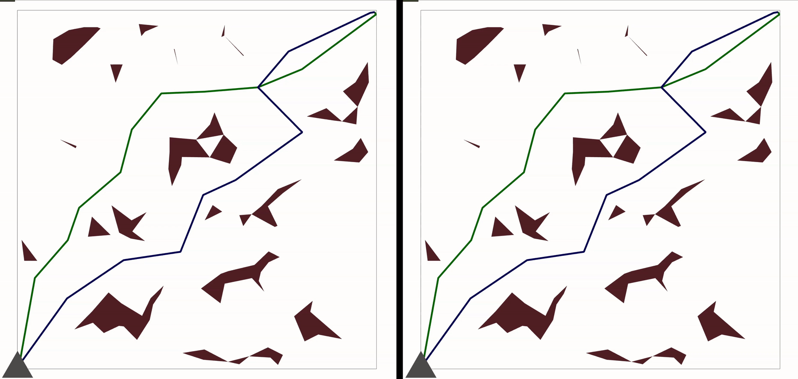
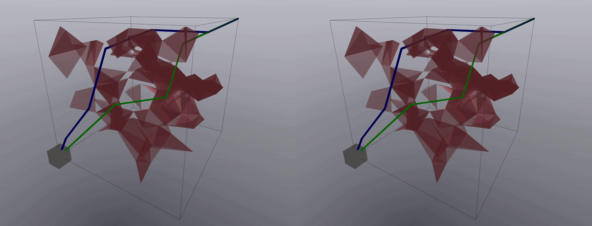

Sampling-Based Motion Planning with Discrete Configuration-Space Symmetries
Thomas Cohn, Russ Tedrake
When planning motions in a configuration space that has underlying symmetries, the ideal planning algorithm should take advantage of those symmetries to produce shorter trajectories. However, finite symmetries lead to complicated changes to the underlying topology of configuration space, preventing the use of standard algorithms. We demonstrate how the key primitives used for sampling-based planning can be efficiently implemented in spaces with finite symmetries. A rigorous theoretical analysis, building upon a study of the geometry of the configuration space, shows improvements in the sample complexity of several standard algorithms. Furthermore, a comprehensive slate of experiments demonstrates the practical improvements in both path length and runtime.
Read the Preprint
Explore the Codebase
Check out the Poster from IROS
Download the Slides from IROS
Results Video:
Recordings of Symmetry-Aware and Symmetry-Unaware Plans
Each gif on the left is the plan produced by the symmetry-aware planner, and each gif on the right is the corresponding plan produced by the symmetry-unaware planner. The symmetry-unaware planner adds extraneous rotation to the object, which is visually apparent in the recordings.

Symmetry-Aware KNN-PRM* (Left) and Symmetry-Unaware KNN-PRM* (Right)

Symmetry-Aware RRT* (Left) and Symmetry-Unaware RRT* (Right)
Complete Numerical Results
In the following table, we plot out all experimental results. For each obejct, we plot the success rate of each algorithm, as well as the relative runtime and path length improvements. The RRT and RRT* planners get 1000 samples in 2D and 250 samples in 3D. The KNN-PRM* and Radius-PRM* planners get 3000|G| samples in 2D and 500|G| samples in 3D.
Note that the PRM* algorithms were capped at 15000 samples for the dodecahedron and icosahedron experiments due to computational limitations (instead of the 30000 samples they would be given due to their group being order 60).